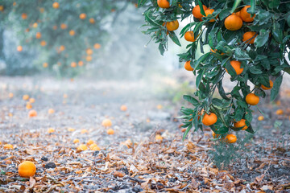
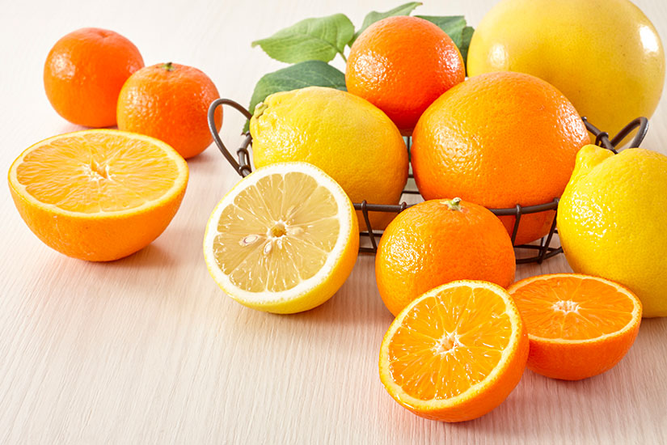
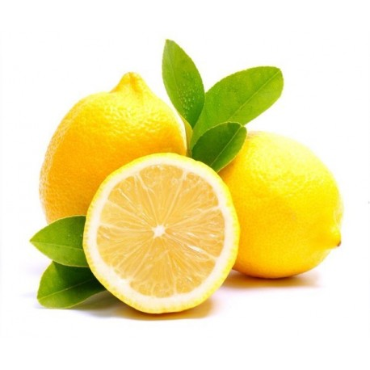
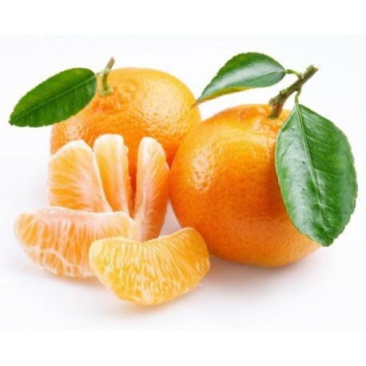
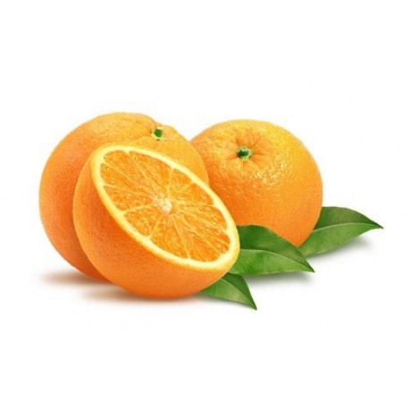

Temporada de cítricos
No solo frío trae esta época del año: las naranjas y las mandarinas son unos de los alimentos estrella del invierno. Además de ser frutas deliciosas, proveen a quienes las consumen muchos beneficios para su salud. Los cítricos son una fuente de flavonoides, vitamina C, folatos y potasio, nutrientes que, en conjunto, preservan la salud cardiovascular, por eso, el invierno es una época perfecta para consumirlos al desayunar, después de las comidas principales o para ingerirlos entre horas.




